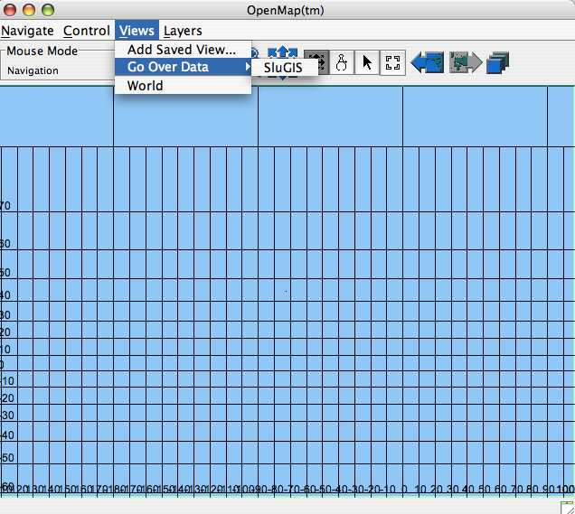
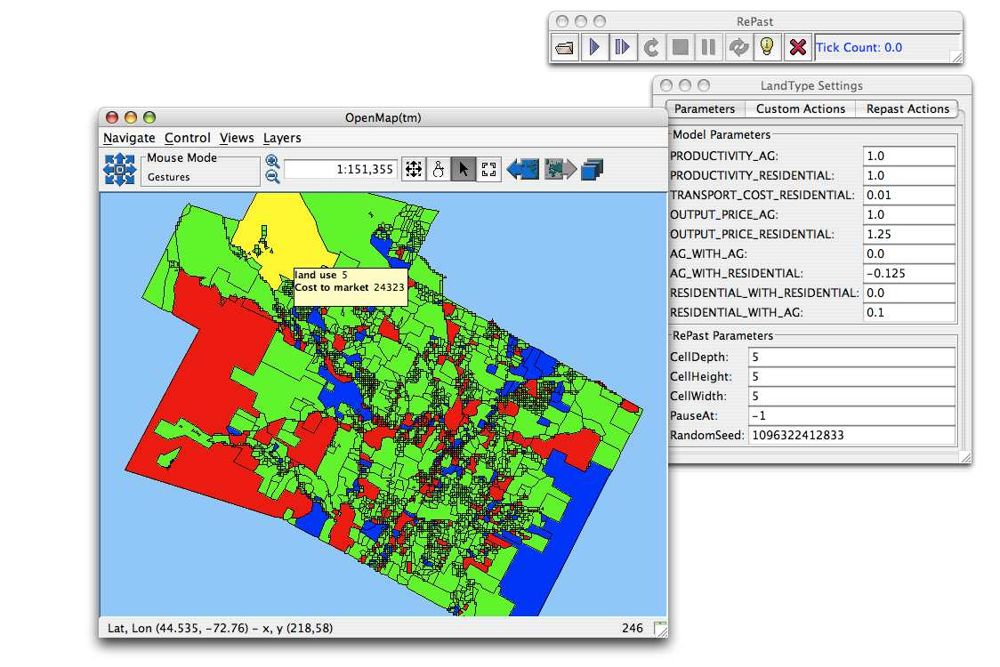
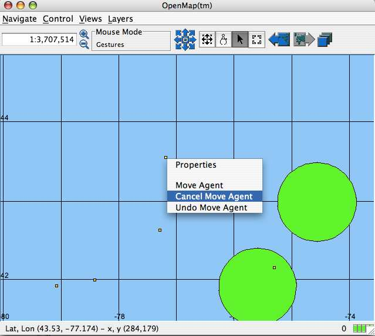
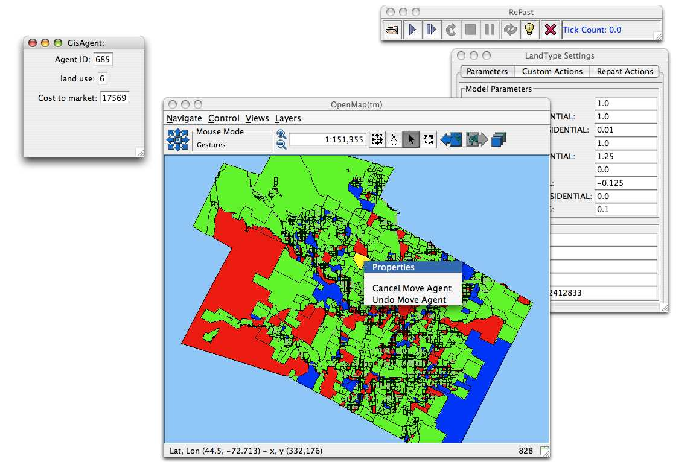

How to use GIS data with Repast
GIS support has been updated for this version of Repast
The main classes you need to know about are in the following packages:
anl.repast.gis
anl.repast.gis.data
anl.repast.display
For an example of creating and modifying agents from Shapefile data,
see <http://www.cs.indiana.edu/~rnajlis/MasMas/slugis.html>
For an example of creating agents from code, as well as just putting up
a shapefile as a visible layer, see
anl.repast.gis.adaptors.openmap.demo#GisAgentsSampleModel.java,
as well as anl.repast.gis.adaptors.openmap.demo#PointAgent.java,
anl.repast.gis.adaptors.openmap.demo#CircleAgent.java, and
anl.repast.gis.adaptors.openmap.demo#URLRasterLocation.java
How To Use:
There are two general classes of tasks that need to be handled for
Repast to work with a GIS. One is reading and writing data.
The other is working with the GIS to coordinate the display of the GIS
with updates to ABMS data. In the Repast-GIS integration, these
tasks are generally broken up into two different classes, a data class,
and a display class.
The data class allows data to be read into Repast from the GIS, and
written out from Repast into a GIS format. Agents can easily be
created from GIS data.
There are two data classes: GeotoolsData, and OpenMapData
There are two main GIS systems for use with Repast, ESRI ArcMap and
OpenMap
There are two display classes EsriDisplay, and OpenMapDisplay
You need to use the correct data class for the display class.
Data Class
|
Display Class
|
GeotoolsData
|
EsriDisplay
|
OpenMapData
|
OpenMapDisplay
|
Using ESRI ArcGIS
Creating and Writing Agents from a Shapefile:
Note: use the GeotoolsData class
with the EsriDisplay class.
First one has to create an appropriate agent class. this can be done by
subclassing DefaultGeotoolsAgent, or by creating a class that
implements the
GeoToolsAgent interface.
In order to create a list of agents from Shapefile data, one has
to
specify functions in the agent class which correspond to the fields in
the Shapefile data. Similarly, in order to update the Shapefile
data based on
the agents, a corresponding function has to be specified in the agent
class. For example, if there is a field in the Shapefile data
called
Landuse, the agent would need functions called setLanduse() and
getLanduse() in order to read and write this data field. The
setLanduse() function allows the data from the Shapefilefile to be set
in
the agent, and the getLanduse() function allows the data from the agent
to be used in updating the Shapefile data file (See the SluGIS model
<http://www.cs.indiana.edu/~rnajlis/MasMas/slugis.html>
After the class has been created, you need to get a list of them (one
agent for each feature in the shapefile). This can be done with
the GeoToolsData#createAgents() function
GeotoolsData geotoolsData = GeotoolsData.getInstance();
ArrayList agentList = new ArrayList();
agentList.addAll(geotoolsData.createAgents(Agent.class, SluGISOM.datasource)); // here Agent.class refers to the GisAgent class specified (here in the Agent.java file)
Now you have a list of agents. If you specified the get and set
Landuse functions, each agent in the list would have had the Landuse
value set by the Landuse field in the dbf associated with the shapefile.
To write out the agents to a datasource, you can use the write Agents
command:
first, you might want to sort your list of agents (if you have changed
the order):
geotoolsData..sortGisAgentsByIndex(agentList);
then write the data:
geotoolsData..writeAgents(agentList, datasource);
you can also interrogate data, which means to look into a shapefile and
see what fields it contains. The interrogate function returns an
array of type FieldNameAndType
FieldNameAndType[] nameTypes = geotoolsData.interrogate( SluGISOM.datasource);
for (int i=0; i<nameTypes.length; i++) {
System.out.println("interrogate " + i + " field name: " + nameTypes[i].getFieldName() + " type : " + nameTypes[i].getFieldType());
}
When you create the agents, each agent also gets an Geometry
object called the_geom. This stands for Geometry object from the
Java Topolgy Suite
<http://www.vividsolutions.com/jts/jtshome.htm> which is used by
GeoTools <www.geotools.org>. The Geometry class is
the base class for geographic geometry objects, that is, objects that
describe the geographic locations of the points and lines (arcs) of the
geographic object. Depending on the type of geometry object, you
will want to cast the Geometry object to the class appropriate for the
data type:
Shapefile data type
|
Geotools class
|
Polygon
|
com.vividsolutions.jts.geom.MultiPolygon |
Point
|
com.vividsolutions.jts.geom.Point |
Polyline
|
com.vividsolutions.jts.geom.MultiLineString |
for example, in order to cast a Geometry object in an Agent class to a
MuliPolygon, you might use code such as the following:
public void setthe_geom(Geometry the_geom) {
this.the_geom = (MultiPolygon)the_geom;
}
Displaying Agents with ArcMap:
In order to display GeotoolsAgents with ESRI ArcMap:
1. load the data into ArcMap.
2. run your model, either through AgentAnalyst, or Repast For Java.
3. Write the data. Make sure your rewrite the file to the
same location, as ArcMap will look for the same file when it refreshes
(you can also save to alternate locations if you wish)
4. After the data has been written, you can tell Esri ArcMap to refresh
EsriDisplay esriDisplay = ESRIDisplay.getInstance();
esriDisplay.updateDisplay();
calling updateDisplay with no parameters assumes a standard setup, with
Refresh.exe located at c:\\agent_analyst\\Refresh\\Refresh.exe
Refresh.exe is the executable used to tell ArcMap to refresh its display
you can also call updateDisplay with the path to a different location
specified. Note the use of double backslashes though. (thus
you could call esriDisplay.updateDisplay("c:\\my_folder\\"); if you had
Refresh.exe installed in c:\my_folder
Using OpenMap
Creating and Writing Agents from a Shapefile:
Note: use the OpenMapData class
with the OpenMapDisplay class.
First one has to create an appropriate agent class. this can be done by
subclassing DefaultOpenMapAgent, or by creating a class that implements
the OpenMapAgent interface.
In order to create a list of agents from GIS data, one has to
specify functions in the agent class which correspond to the fields in
the GIS data. Similarly, in order to update the GIS data based on
the agents, a corresponding function has to be specified in the agent
class. For example, if there is a field in the GIS data called
Landuse, the agent would need functions called setLanduse() and
getLanduse() in order to read and write this data field. The
setLanduse() function allows the data from the GIS file to be set in
the agent, and the getLanduse() function allows the data from the agent
to be used in updating the GIS data file (See the SluGIS model
<http://www.cs.indiana.edu/~rnajlis/MasMas/slugis.html>
After the class has been created, you need to get a list of them (one
agent for each feature in the shapefile). This can be done with
the OpenMapData#createAgents() function
OpenMapData omData = OpenMapData.getInstance();
ArrayList agentList = new ArrayList();
agentList.addAll(omData.createAgents(Agent.class, SluGISOM.datasource)); // here Agent.class refers to the GisAgent class specified (here in the Agent.java file)
Now you have a list of agents. If you specified the get and set
Landuse functions, each agent in the list would have had the Landuse
value set by the Landuse field in the dbf associated with the shapefile.
To write out the agents to a datasource, you can use the write Agents
command:
first, you might want to sort your list of agents (if you have changed
the order):
omData.sortGisAgentsByIndex(agentList);
then write the data:
omData.writeAgents(agentList, datasource);
you can also interrogate data, which means to look into a shapefile and
see what fields it contains. The interrogate function returns an
array of type FieldNameAndType
FieldNameAndType[] nameTypes = omData.interrogate( SluGISOM.datasource);
for (int i=0; i<nameTypes.length; i++) {
System.out.println("interrogate " + i + " field name: " + nameTypes[i].getFieldName() + " type : " + nameTypes[i].getFieldType());
}
When you create the agents, each agent also gets an OMGraphic
object. This stands for OpenMapGraphic. It is one of the
base classes used in OpenMap for displaying GIS graphics. There
are a number of classes you need to know about in order to use OpenMap
graphics classes. OMGraphic has already been mentioned.
EsriGraphic is an interface for any OMGraphic that will be used with a
Shapefile. Three classes that implement the EsriGraphic interface
and extend OMGraphic are EsriPoint, EsriPolygon, and EsriPolyLine.
Depending on the type of OMGraphic object, you may want to cast the
OMGraphic object to the class appropriate for the
data type:
for example, in order to cast an OMGraphic object in an Agent class to
a point from an shapefile, you might use code such as the following:
public void setOMGraphic(OMGraphic omg) {
if (omg instanceof EsriPoint) {
this.point = (EsriPoint)omg;
}
}
Shapefile data type
|
OpenMap class
|
Polygon
|
com.bbn.openmap.dataAccess.shape.EsriPolygon |
Point
|
com.bbn.openmap.dataAccess.shape.EsriPoint |
Polyline
|
com.bbn.openmap.dataAccess.shape.EsriPolyline |
As you will see, some of the functions in the OpenMapData class can use
an
OMGraphic, while othere require an EsriGraphicList. This is the case
because there are some special characteristics of EsriGraphics and
EsriGraphicsLists that are sometimes needed (mainly the ability to get
the extents). There is a function
buildEsriGraphicList(Collection gisAgents)
this function will build an EsriGraphicsList from a Collection of
GisAgents. This can be useful when a function requires an
EsriGraphics list, but you have a collection of Agents that have
OMGraphics.
NOTE: It is possible to convert some OMGraphics to
EsriGraphics. The code will try to convert them, but not all can
be converted. If you want OMGraphics that can be used as
EsriGraphics, it is advised that you use only the EsriGraphic types
(EsriPoint, EsriPolygon, and EsriPolyLine). EsriGraphics are
useful for writing out data to Shapefiles. Furthermore, it is
possible to convert some OMGraphic objects to EsriGraphic
objects. For instance, an OMPoint cna be converted to an
EsriPoint by using the function EsriPolygon#convert(OMPoly omPoly)
which will return an EsriPolygon. Furthermore, an OMCircle cna be
converted to an OMPoly by using the function
EsriPolygonList#onvert(OMCircle omCircle,
Projection proj), this OMPoly can then be converted to an
EsriPolygon. Relevant classes in the OpenMap API to look at are:
EsriPolygon, EsriPolygonList, EsriPoint, EsriPointList, EsriPolyline,
EsriPolylineList.
Displaying Agents with OpenMap
In oder to display OpenMapAgents with OpenMap
1. your Shapfile data must be in
decimal degree coordinates, OpenMap
does not handle pre-projected data.
2. create the agents and add them to a list (as shown in the section on
Data)
3. create a new instance of OpenMap Display:
OpenMapDisplay omDisplay = new OpenMapDisplay();
2. Add the agents to a layer:
omDisplay.addlayer(gisAgents, "AgentLayer");
3. Update Agents. After changes have been made to the agents, you
can update the layer containg them:
omDisplay.updateLayer(gisAgents, "AgentLayer");
Using The OpenMap Display
Somtimes when you start up OpenMap it can be hard to find your
data. This is because OpenMap has opened with a world view, but
you data does not occupy that much space. To focus the display on
your data you can use the Views>>GoOverData file menu.

Agents displayed in OpenMap will display a tooltip when the mouse is
moved over it. The tooltip text is based on the gisPropertyList
returned from the GisAgent. The gisPropertyList is used here as
follows: the list is expected to consist of a pair of strings for
each entry. The first element is the name to be display ("land
use" in the example below) and the second element is the name of a a
function ("getLanduse")

This image shows a number of different agent types: The smaller ones
use EsriPoints for their graphics, the larger use OMCircles. The
EsriPoints can be written to a shapfile, while the OMCircles
cannot.
You can view the properties of an agent (these are the same properties
as shown in the tooltip.
Agents can be moved. make sure that the cursor is an arrow.
Also, make sure that the layer you want to modify is on top (use the
Edit layers option under the layers menu to change the relative
position - top to bottom - of layers. Right click on the agent
you want to move, you will get the popup menu. Choose move
agent. The left click wherever you want to move it. (Mac
users note, this seems to require an external mouse - I don't know
why. hopefully this will change with future version of OpenMap).

in this image there is no option to move the agents because they are
polygons. polygons cannot be moved.

Some useful links:
ESRI
Geotools
Java Topolgy
Suite
OpenMap